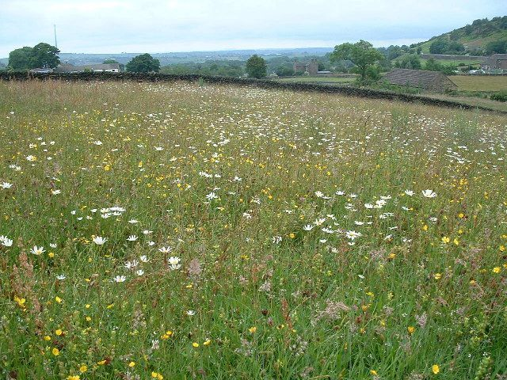
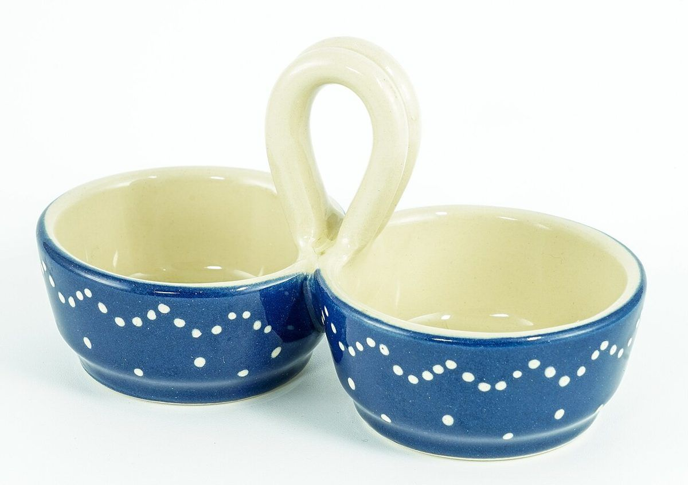

ゆっくり過ごせるお店だといいなと思います。
口コミ
以下は実際のお客様の声ではなく、イメージとして制作側が作成した例です。実際の声が集まり次第、差し替えます。


お店の情報が分かりやすいと安心できたらいいなと思います。
気軽に立ち寄れるお店だと嬉しいなと思います。
掲載の写真はフリー素材のイメージで、店舗の実際の様子ではありません。他地域で撮影されたものや、撮影地が不明なものを含みます。
お店の最新情報は、Instagramをご覧ください。
このページは制作側の案をもとにしたサンプルです。内容は決まり次第お店の情報に差し替えます。
以下は実際のお客様の声ではなく、イメージとして制作側が作成した例です。実際の声が集まり次第、差し替えます。
ゆっくり過ごせるお店だといいなと思います。


お店の情報が分かりやすいと安心できたらいいなと思います。
気軽に立ち寄れるお店だと嬉しいなと思います。
掲載の写真はフリー素材のイメージで、店舗の実際の様子ではありません。他地域で撮影されたものや、撮影地が不明なものを含みます。
お店の最新情報は、Instagramをご覧ください。